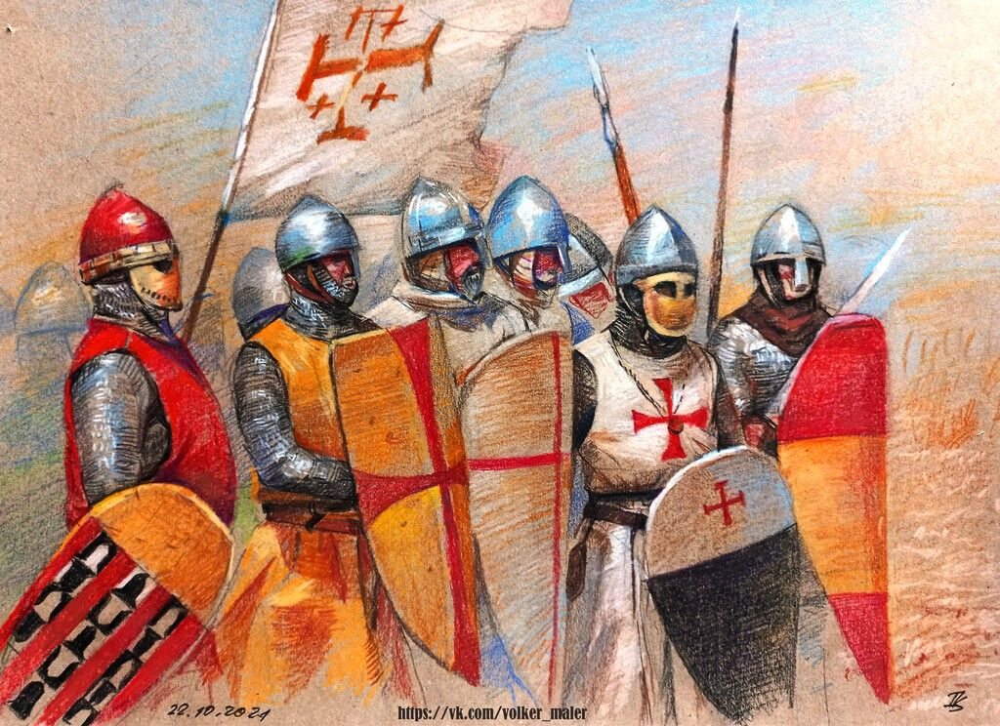

Los Estados Cruzados
-
El condado de Edesa (1098-1144). Fue el primer Estado cruzado. Creado por Balduino de Boulogne en Siria, quien posteriormente
se proclamó rey de Jerusalén, fue también el primer Estado cruzado en desaparecer, pues fue conquistado por los turcos selyúcidas en 1144,
hecho que desencadenó la Segunda Cruzada.
-
El principado de Antioquía (1098-1268). Al sur de la actual Turquía, este Estado quedó a cargo de Bohemundo de Tarento,
quien luego de ser tomado prisionero por los musulmanes y finalmente liberado, dejó como regente a su sobrino Tancredo. Este principado
atravesó diversos conflictos y pérdidas territoriales hasta su disolución en 1268 a manos de los mamelucos del sultán Balibar.
- El condado de Trípoli (1109-1268). El asedio de Trípoli en el Líbano fue conducido inicialmente por Raimundo de Saint-Gilles, quien llegó a ostentar el título de conde de Trípoli por haber conquistado las tierras vecinas. El asedio fue completado luego de su muerte. Así se creó el condado de Trípoli, que perduró hasta 1268 cuando cayó ante los mamelucos.
-
El reino de Jerusalén (1099-1187). La conquista de Jerusalén tuvo como protagonista a Godofredo de Bouillón,
quien logró vencer a los musulmanes fatimíes que habían, a su vez, expulsado a los turcos selyúcidas. El resultado inmediato fue una
masacre de población musulmana y judía acompañada de la captura de prisioneros. Godofredo se proclamó gobernante de Jerusalén con el título de
“protector del Santo Sepulcro” y, a su muerte, fue sucedido por su hermano Balduino que adoptó el título de rey de Jerusalén. Este reino fue
perdido a manos del sultán Saladino en 1187. Durante la Tercera Cruzada los cristianos recuperaron territorios en la costa de Palestina y
establecieron su centro en Acre (en el actual Israel). Además fundaron el reino de Chipre. Acre fue finalmente conquistada por los mamelucos
en 1291 y esto signó el fin de los Estados cruzados.
Los Cruzados
Las primeras Cruzadas convocaron a personas de toda condición social y de distintos puntos de Europa. Algunos sectores humildes y marginales participaron en la llamada “Cruzada popular” que no contó con la aprobación del Papa, pero otros se integraron en las Cruzadas oficiales junto a nobles y caballeros que iban mejor equipados y entrenados. A partir de la Segunda Cruzada adquirieron protagonismo algunos reyes en la conducción de estas expediciones.
Las razones para participar en las Cruzadas eran diversas. La más visible era el fervor religioso que podían experimentar todos los estratos sociales de la cristiandad occidental, motivados por la defensa de la Tierra Santa o por la indulgencia plenaria. Pero también fue importante la ambición política de algunos nobles que deseaban conquistar territorios y los intereses económicos de sectores de la baja nobleza o de condición social menos privilegiada que se beneficiaron de la rapiña, el botín o la obtención de tierras para usufructuar.
Algunos simplemente seguían a sus señores, a quienes debían fidelidad (esta forma de reclutamiento por obligaciones de vasallaje parece haber sido predominante a partir de la Tercera Cruzada). Algunos mercaderes podían aprovechar las rutas de traslado a Medio Oriente como una oportunidad de negocios y otros individuos podían estar motivados por la obtención de títulos nobiliarios como recompensa por acompañar a los líderes cruzados.
El éxito de la Primera Cruzada y el asentamiento de los cruzados en Siria y Palestina fomentó además la creación de órdenes monásticas y militares que tenían la misión de proteger a los peregrinos y defender las nuevas posesiones cristianas. Así nacieron los caballeros templarios (1119-1314), los caballeros hospitalarios (surgidos en 1113 y famosos, entre otras cosas, por su control de castillos como el Crac de los caballeros en Siria), los caballeros teutones (cuya orden fue fundada en 1190), entre otros. Estos monjes-guerreros tomaban votos monásticos y se dedicaban a la actividad militar.
La organización militar de los cruzados dependía tanto de la caballería como de la infantería. Las unidades se formaban a partir de la jura de fidelidad a un líder cruzado. El traslado desde Europa se hizo inicialmente por vía terrestre pero a partir de la Tercera Cruzada se hizo más frecuente el recurso a embarcaciones, generalmente proveídas por ciudades comerciales italianas como Venecia y Génova.

Órdenes Militares
- Caballeros Templarios
- Caballeros Hospitalarios
- Caballeros Teutónicos
Objetivos de las Cruzadas
- Recuperar Jerusalén
- Detener el avance islámico
- Expandir el poder de la Iglesia
Personajes Musulmanes Relevantes
Entre los líderes musulmanes, destaca Saladino, quien recuperó Jerusalén en 1187 y estableció una tregua con los cruzados en la Tercera Cruzada.